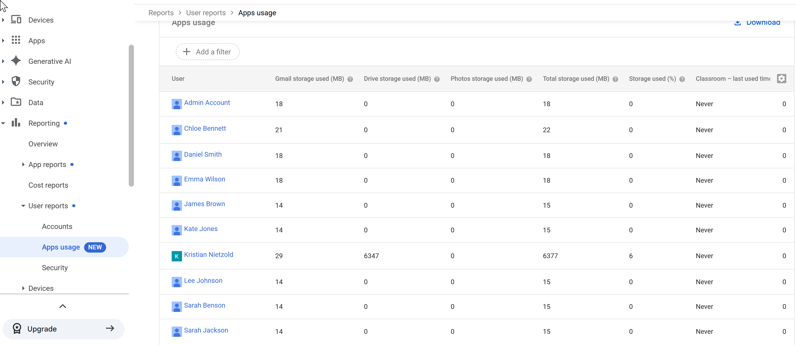
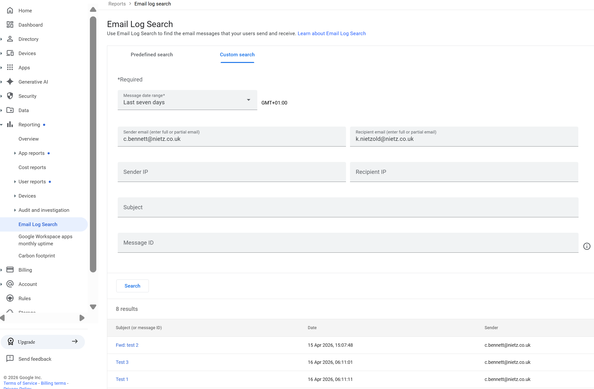
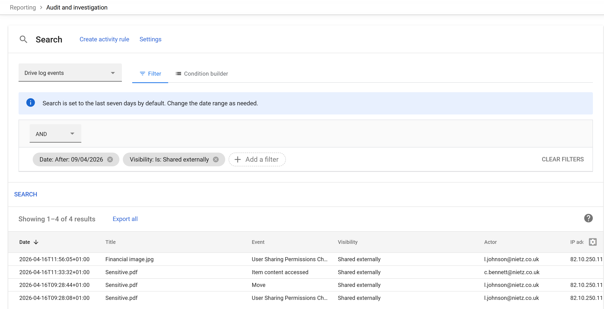

Google Workspace Lab
Reporting & Monitoring
This section demonstrates how Google Workspace reporting and audit tools were used to monitor user authentication activity, assess account security posture, investigate email delivery, track file activity, and identify potential data exposure risks.
Real-world administrative visibility and investigation workflows across identity, email, and Drive activity.
User Activity Monitoring (Audit & Investigation)
The Audit and Investigation tool was used to analyse user authentication activity and review recent user log events.

Audit and Investigation view showing user log events
Observations
- Successful and failed login attempts are visible
- 2-Step Verification events are logged
- Login types such as password and re-authentication are recorded
- IP addresses provide useful investigation context
Useful for investigating suspicious login activity, validating security controls, and reviewing authentication history.
Account Security Posture (User Reports)
User account security status was reviewed across the organisation using the built-in reporting dashboard.

Accounts report showing 2-Step Verification, password posture, and protection status
Key Insights
- 2-Step Verification enforcement is enabled
- Enrolment status varies across users
- Password compliance is visible per account
- Protected account status can be reviewed centrally
This helps identify users who are not yet enrolled in 2-Step Verification and supports security reviews across the tenant.
Application & Storage Usage
Apps usage reporting was used to understand user storage consumption and identify high-usage accounts.

Apps usage report showing per-user storage consumption
Observations
- Usage is broken down by Gmail, Drive, and Photos
- Total storage consumption can be compared per user
- Heavy storage users are easy to identify
- Low-activity or inactive accounts are also visible
Useful for capacity planning, identifying unusual usage patterns, and reviewing account activity.
Email Investigation (Email Log Search)
Email Log Search was used to trace a test message between users by filtering on sender, recipient, and date range.

Email Log Search used to locate specific messages
Action Performed
- Filtered by sender address
- Filtered by recipient address
- Used a date range to narrow results
- Located specific test emails for inspection
Email Message Trace
After identifying a message, detailed inspection was used to validate delivery and mail flow.

Detailed message trace showing delivery pipeline and recipient status
Insights
- Message delivery status is visible
- Message ID and timestamp are recorded
- Mail flow stages can be reviewed step by step
- Final delivery to the recipient mailbox is confirmed
This supports troubleshooting for delayed, missing, or disputed email delivery.
Drive Activity Monitoring
Drive audit logs were reviewed to track document activity, sharing changes, and file movement.

Drive log events overview showing recent document activity
Observations
- File creation, copying, movement, and sharing activity is logged
- Visibility changes are visible in audit data
- Document titles, actors, and timestamps are recorded
- The log supports investigation of file lifecycle events
External Sharing Investigation
Filters were applied to isolate files that had been shared externally and investigate possible data exposure.

Filtered Drive log showing externally shared files and related events
Findings
- Files shared outside the organisation were identified quickly
- Permission changes and access events were visible
- Actors and timestamps were clearly recorded
- Potential data leakage events could be reviewed end to end
This provides the visibility needed to investigate who shared a file, when it happened, and what exposure may have occurred.
Key Security Capabilities Demonstrated
- Centralised audit logging across multiple Google Workspace services
- Correlation of identity, email, and file activity
- Visibility into authentication and access behaviour
- Support for real-world incident investigation workflows
Validation
- Login activity and 2-Step Verification events were logged in real time
- Account security posture was visible across all users
- Email delivery could be traced end to end
- Drive activity and sharing changes were fully auditable
- External sharing activity could be filtered and investigated
Real-World Considerations
- Audit data should be reviewed regularly
- High-risk actions should be paired with alerting rules
- Long-term retention may be needed for compliance requirements
- Export or SIEM integration can improve wider security monitoring
Summary
- Authentication activity was monitored through audit logs
- Account security posture was reviewed centrally
- Email delivery was traced using Email Log Search
- Drive activity and external sharing were investigated successfully
- Reporting tools provided practical operational and security visibility